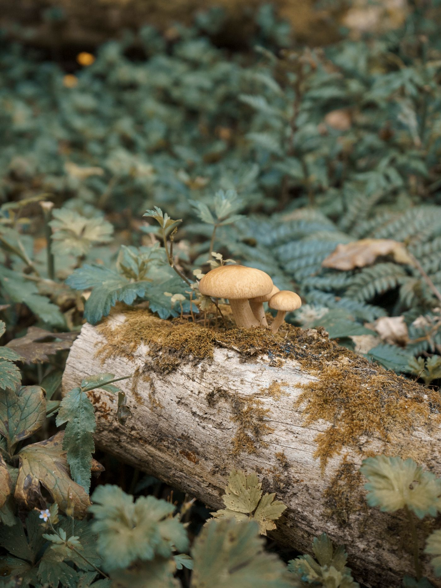
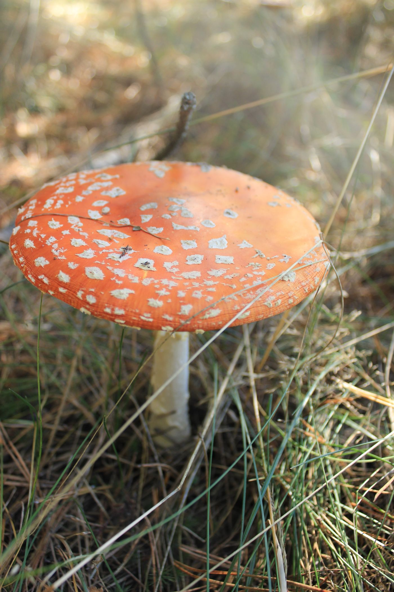

FUNGAL SURVEYS · IDENTIFICATION · RECORDS
The forest, catalogued underground.
Most of a wood is fungal and most of it is never seen. I survey estates, orchards and woodlands and write down what is actually there — every find keyed by hand, checked under the microscope, vouchered and lodged with the national record. What a plan can safely cut, plant or keep starts from that list.

THE OPEN REGISTER
Nine specimens, fully entered
A page from the working register. Each entry carries its full taxonomy, substrate, season and spore print — and its caution, because a register that only praises is a sales leaflet. Select an entry to read its sheet.
When they fruit
Fruiting is weather-led, but the calendar is not a guess. Choose a month; the strip answers from the same register data as the sheets above.
SERVICES & FEES
What can be commissioned
Fees are printed because a survey is bought like any other professional service: on scope, season and price. Every engagement ends in a written report and a species list you own.
| Service | For | Basis | From |
|---|---|---|---|
| Woodland fungal survey & inventoryTransects across the site, full species list, notable-find map, management notes. | Estates, forestry bodies, councils | Per day on site | £420 |
| Veteran tree & protected-species checkA focused visit ahead of felling, restocking or tree-safety work. See Case 01. | Estates, tree officers, agents | Per visit | £260 |
| Orchard & tree-health diagnosisDeclining trees examined in the roots and the bark, not from a photograph; written diagnosis and options. | Growers, cider orchards, garden owners | Per visit + report | £240 |
| Identification courses — “Keys, Not Apps”A field day teaching dichotomous keys, spore prints and safe practice. Maximum 12. | Wildlife trusts, recording groups | Per person / group day | £85 / £480 |
| Research support: microscopy & barcodingDeterminations for difficult collections; DNA barcoding arranged and interpreted. | Universities, consultancies | Per batch | £180 |
What moves the price
- Site size and terrain — a flat 4-hectare orchard is not a steep 40-hectare wood.
- Season — the mid-October weeks book first, usually by August.
- How many vouchers need the microscope; difficult genera take bench time, not field time.
- DNA barcoding at £38 per sample, charged at cost, only where it changes the answer.
- Travel beyond 40 miles from Ross-on-Wye, at cost.
HOW A SURVEY RUNS
Four passes, in order
Walk & transect
The site is walked on planned lines, not wandered. Every fruiting fungus is noted with its substrate and host — the tree is half the record.
Key, print, microscope
Field names are provisional. Back at the bench, specimens are keyed, spore-printed and sectioned until the name is earned or honestly left at genus.
Voucher & record
Notable finds are vouchered and dried; all records go to the county recorder for the Fungal Records Database of Britain & Ireland.
Report & map
A written report within 15 working days: species list, notable-find map, and what it means for the felling plan, the planting plan or the trees.

FROM THE SURVEYS — CASE 01
One find that kept three veteran beeches standing
At the Hailsham Estate, a pre-felling survey found lion's mane — a Schedule 8 protected species — fruiting on three veteran beeches in the felling coupe, alongside root-decay fungi that changed the tree-safety picture. The coupe was redrawn around them.
READ THE FULL SURVEY →“Helen's survey found the lion's mane a fortnight before the contractors were due in. The felling plan was redrawn around those trees, and for the first time our paperwork was ahead of the problem instead of behind it.”
Commission a survey
Autumn dates go first. Send the site, the acreage and the question — the reply comes within three working days.